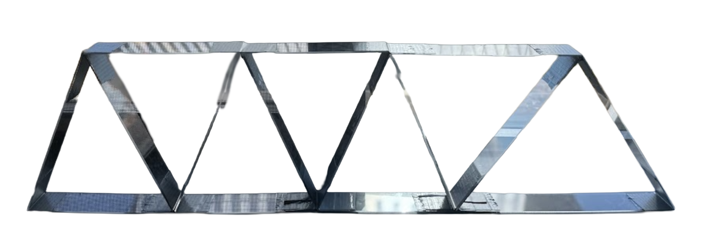
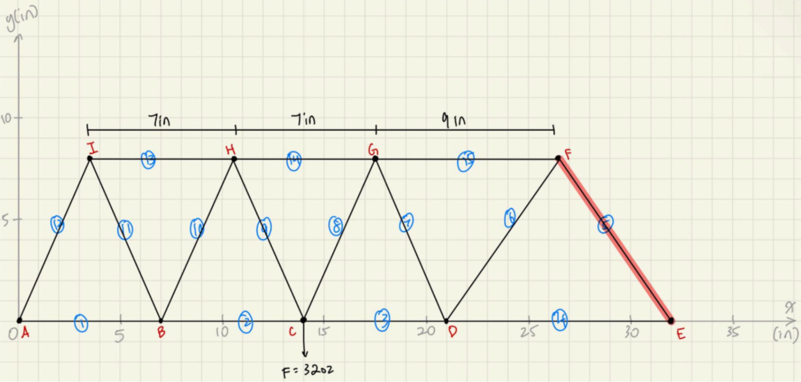

Truss Design & Optimization
I created and analyzed 12 truss designs using a MATLAB algorithm to optimize load and cost, leading to a 79.3% increase in maximum load from initial to final design, which held 1.6 kg or 60.58 oz and had a load-to-cost ratio of 0.2794 oz/$. In the final testing, the actual load held by the truss closely aligned with theoretical results.
Prior to the design process, my team conducted property testing on the acrylic material. By finding the buckling limits, we established a precise data foundation to inform the design and coding parameters.

Techanical Reports
For a detailed technical breakdown, you can view my team's project reports linked below:
Result Highlight
The project involved creating a computational model to predict buckling and member failure. By identifying the critical member (highlighted in the diagram below), I was able to redistribute material effectively, leaving one-third of the budget unused while still exceeding performance targets.

Labled model: Member numbers (1-15), joint letters (A-I), and failure point analysis.